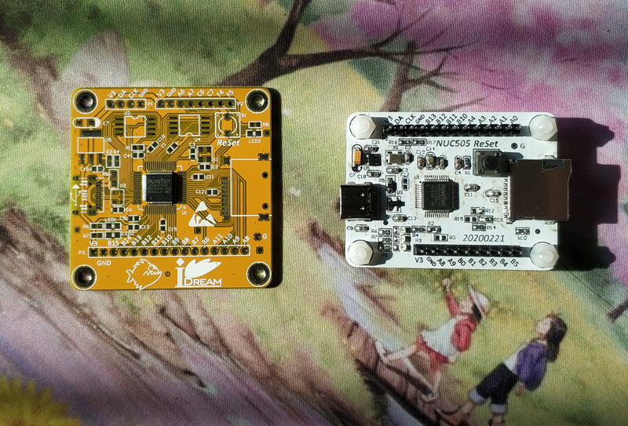
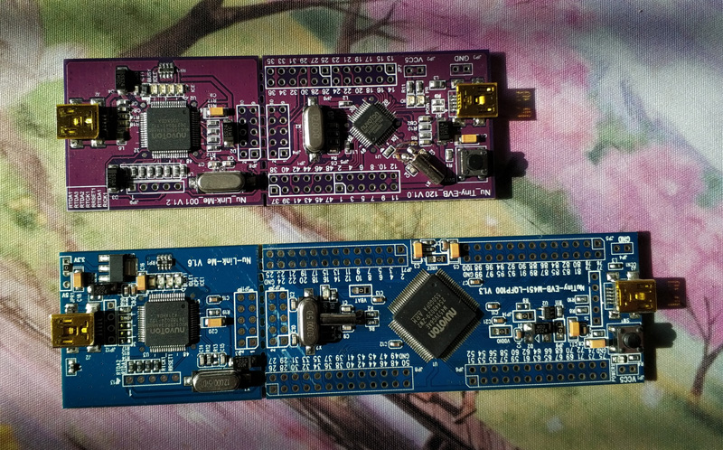
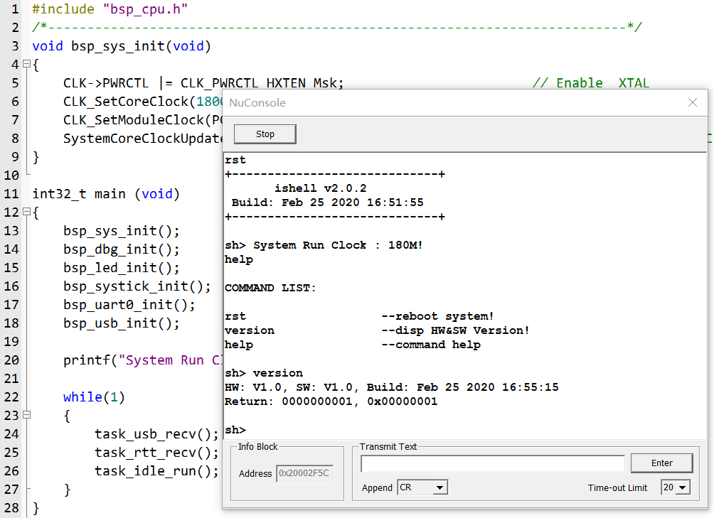
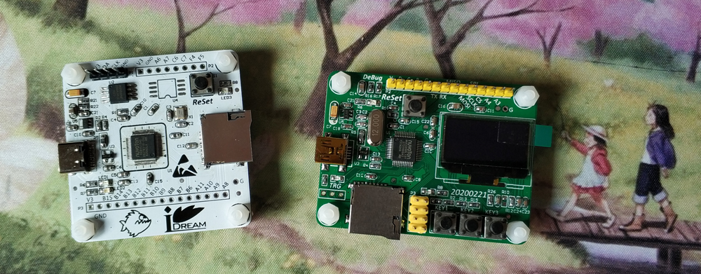
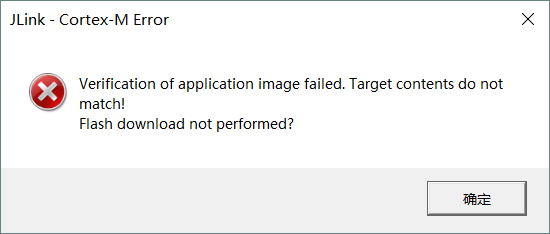
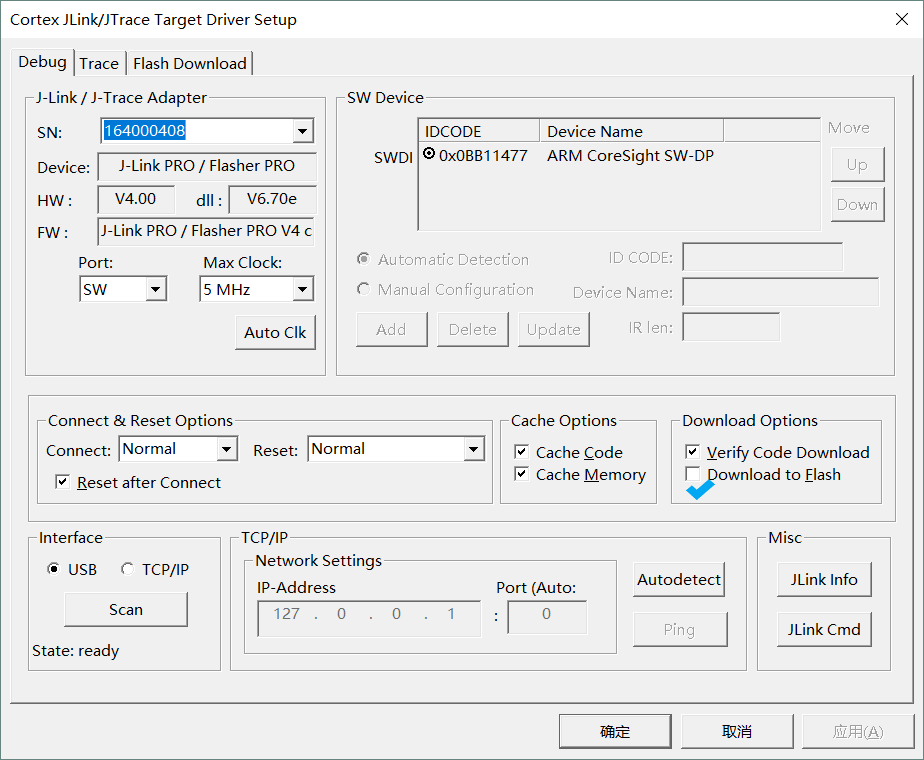

背景
本来做的是M484，看好了它的片上高速USB、双SDHC、QSPI FLash等，结果入了新塘第一坑：LQFP64封装是.4间距的，偶直接拖了个STM32F205的封装过来，.5间距的，结果就是下面这样：

无意间于Whycan论坛（原填坑网）上发现了这款神U：NUC505：
- 高速USB Device，USB2.0 USBHost. SD Host.
- 128 KSRAM，512KB/2MB SPI Flash（片上无flash）
- 含有浮点运算单元和DSP的ARM® Cortex®-M4内核，最高可运行至100MHz
- 内建双声道24位音频解码器（某些型号）
- 封装友好：LQFP48、QFN48、LQFP64、QFN88.
相见恨晚啊，这不就是我一直想要的嘛.. 天猫Nuvoton旗舰店一查价格：NUC505DL13Y（2MB SPI FLASH）才￥7.60！便宜的令人发指！！！ 那还等什么？立马画板打板，开启了我的“坑”中之旅~~
先记录下官网用到的软件及文档：
- BSP：NUC505_Series_BSP_CMSIS_V3.03.001.zip
- MDK Pack：Nuvoton.NuMicro_DFP.1.3.5.pack
坑一：J-Link不支持？
明明是CortexM4核，明明也支持SWD模式，结果JLink无法识别，打开J-Link commander也没NUC505系列，估计是没给Segger付费吧，可惜了我的MiniJlink和RTT，好用的工具只能暂时放一边了，好在之前参加过几次Nuvoton的研讨会，大方的新塘送的demo板上都有NuLinkMe调试器，暴力掰下来，然后杜邦线连之。

坑二：片内SPI Flash And Boot
前面多次提到过2MB的片内SPI Flash，2MB看上去很美，但是封的是SPI FLash，虽然支持片上运行，但是速度相比SRAM中运行慢了100倍！没错，是100倍！星爷的那句 “我奶奶骂他欺善民，反被他捉进了唐府，xx了一百遍 ！一百遍！！！” 在耳边飘荡…， Github中看到了下面的描述：
“ Although code can run directly out of the SPI flash, execution is understandably SLOOOW. For this reason, the default Section Placement setting provided for new projects by this package is “Flash Copy to RAM”; however, the usual “Flash” and “RAM” options are provided for completeness as well.
The NUC505 has a “Boot from USB” mode where the device appears as a USB Mass Storage device. A .bin binary image copied to the device is programmed to the internal SPI memory at 0x0. When the NUC505 is then returned to the “Boot from Internal MCP SPI flash” and restarted, it will attempt to boot from that image. HOWEVER, the “Boot from USB” USB Mass Storage implementation appears to only work in Windows; Linux detects the emulated volume as having corruption and will refuse to mount it for write access.
When the NUC505 is set to its “SWD/ICE Mode with Internal SPI Flash“ mode, the NUC505 will NOT execute user code upon hardware reset. Instead, it runs from its internal mask ROM code and execution eventually reaches an endless loop. This boot mode seems to be intended exclusively for using an IDE to both program memory and specifically initiate debugging execution of the user application.”
片上的spi flash看来只能用于代码的存储和boot了，（还可以用于存储一些数据，省了外部的存储了）然后将代码copy到ram里运行，也行，谁让它便宜来，128KB SRAM，分了4个bank，每个32KB，这样就可以作为32K RAM/96 K Flash 或者 64K RAM/64 K Flash的配置来用了，紧着这128K 来回蹂躏吧~
But，在“SWD/ICE with Internal SPI Flash”模式下无法运行用户代码是什么鬼？尝试了才知道：在这种模式下，可以通过MDK的debug进行程序下载、debug、查看变量、全速运行等等，但是退出debug模式，这货就不跑了！即使按reset也不行，想让它从能从spi flash中自举运行？那得改变它的硬件boot模式才行！只有1111模式下可以直接从内部SPI Flash启动，但是在这种模式下，仿真器无法连接！！！真是反人类的设计！！不服？咬他？当心被捉进唐府…
记NUC505的启动配置：（在复位时默认上拉，所以如需配置为0，则相应管脚需加10KR电阻下拉）
| PB.4 | PB.3 | PA.10 | PA.9 | 描述 |
|---|---|---|---|---|
| 1 | 1 | 1 | 1 | 内部MCP SPI FLash启动 |
| 1 | 1 | 1 | 0 | USB启动 |
| 1 | 1 | 0 | 1 | 外部SPI Flash启动 |
| 1 | 0 | 1 | 1 | ICP模式启动 |
| 0 | 1 | 1 | 1 | SWD/ICE + 内部SPI Flash |
| 0 | 1 | 1 | 0 | SWD/ICE + 外部SPI Flash |
记录我的板子上的调试：
- 电阻全都不焊，默认 1111 ： 从片上SPI Flash中启动
- R13 = 10KR， PB4=0， SWD/ICE + 内部SPI Flash ，调试时使用这种模式。
- R3 = 10KR， PA9=0， USB启动。
坑三：优化精简代码
官方代码：NUC505_Series_BSP_CMSIS_V3.03.001，压缩包52M左右，解压后先看下Readme.pdf，比较详细的描述了各个目录下的工程等，为了方便备份，我又完整的拷贝了一份解压后的文件，打开NUC505_Series_BSP_CMSIS_V3.03.001\SampleCode\StdDriver\USBD_VCOM_SerialEmulator这个工程，然后开始编译+删除，不断尝试后把不需要用到的都给删除掉并能编译成功，至文件夹大约5MB左右，OK！这就是我要的工程了，以后就在这个上面盖房子就行。
注：默认配置该工程是使用的SPI FLASH的，需要先设置成“SWD/ICE + 内部SPI Flash”模式下，debug下可以运行，也可以下载，然后把启动模式更改为“内部MCP SPI FLash启动”，上电即可运行。
在SampleCode\BootTemplate下有几个例程，参考来实现如何使用SPI Flash和SRAM，目前使用MainOnSram例程，就是启动代码在spi flash中，然后其他大部分程序都是在ram中执行。直接用该例程的ld文件就可以。另外程序稍作配置，将主频配到180M，96M太对不起这内存了。顺便移植了下新塘的NuConsole，跟Segger的RTT类似，在debug模式下打开即可，再插上shell的翅膀，可以起飞啦！

顺便再吐槽下他家的NuConsole，虽然功能跟RTT相似，结果请看上图：不支持最大化！只能这么小窗口显示，真是小气的很~
坑四：新鲜出炉的M484+NUC505
之前由于封装画错了的M484只能含泪默默重新改版，顺便把NUC505也改了改，加上了oled和按键。

NUC505 LQFP封装的可用IO 还是比较少的，目前几乎全用上了，于是在按键输入上又掉坑里了！
PA0 - 看上去是GPIO管脚，结果该脚使能上拉读出来的值始终为0，查了下手册才发现PA0-ADC_CH0，内建10KR电阻分压用作电池检测！内贱啊！！！也没个电路看看如果要测电池电压该怎么接…顺便看了下它的ADC，虽然只有一个ADC，可是玩出了很多花样：
ADC_CH1通道最高可达1MSPS的采样率。
ADC_CH2~ADC_CH7:最高200KSPS采样率。
ADC_CH2：支持键盘比较器。
ADC_CH0：内建10KR电阻分压用作电池检测。
好在OLED一把就点亮了，SPI代码配置真是简洁。
坑五：VCP 512整数倍发送的问题
老生常谈的话题了，早在STM32上就有这问题，结果在505上又遇到了，说白了就是在发完整数倍数据包如果还有要发的数据就接着发数据，没有要发的数据了就发个空包就行，在这一点上Nuvoton设计的还是比较人性化的：USBD->EP[EPA].EPRSPCTL = USB_EP_RSPCTL_ZEROLEN;
对EPRSPCTL的ZERO位置1就会发送一个空包了。至于为啥是512，因为是高速USB嘛，还有一点：可以配置缓冲区为1024，然后收发 一包就是1024Byte，真爽~
坑六：UART的接收超时中断
之前用stm32F072时使用串口空闲中断作为接收成帧判断，看NUC505的手册看到UART_TOUT寄存器中的TOIC：当RX FIFO接收到一个新的数据时，定时溢出计数器开始计数，超时后如果RXTOINT为使能，则接收超时中断RXTOINT产生。要求设置为40~255之间，如TOIC为40，则在4个字符时间长度后还没收到新数据，则超时中断产生。看这个描述正正合我的心意！UART1设置46字节fifo的阈值中断，这样使用也可以很大的减轻CPU的负担又能再收到一帧数据后 延时4个字符给出中断，测试时也是OK的，蛋蛋蛋但是：
当正好发送46字节时，则无超时中断产生，只有UART_INTSTS_RDAINT_Msk中断产生，从此读出数据后，UART_INTSTS_RXTOINT_Msk并未置位，而无论少一个或多一个，都是OK的！
what’s the ~！M48x的用户别偷笑，你们也有同样的问题！
查看UART_INTSTS寄存器中RXTOINT：如果TOUTIEN和RXTOIF都被置1，该位置1. 跟着看RXTOIF的描述：
当RX FIFO非空且RX FIFO无活动发生，定时溢出计数器等于TOIC时，该位置位。
总和之即：超时中断要产生，需要RX FIFO非空，并且TOIC超时溢出并使能。那么问题就在于当正好到RX FIFO阈值中断时，在中断服务函数把数据全都读出来了导致RX FIFO空了，所以就不满足了，自然就无法产生超时溢出中断了！真是蛋疼的设计，那怎么解决呢？解决方法很简单，在阈值中断中让rx fifo不空就完事了。留一个字节在fifo里！问题完美解决！
顺便再吐槽一下：UART0的RX和TX FIFO是16， UART1和UART2的RX TX FIFO是64！就三个UART还整的不一样，顺便赞一下：RS485模式，使用RTS控制485的换向端，真香！
坑七：NuLink VS JLink
忍受了这么久的NULink，现在终于可以用JLink来欢快的仿真下载调试NUC505了，爽的不要不要的，实现方式很简单，就是在JLinkDevices.xml中添加上NUC505的型号就可以了，如下：
<Device>
<ChipInfo Vendor="Nuvoton" Name="NUC505YO13Y" WorkRAMAddr="0x20000000" WorkRAMSize="0x00020000" Core="JLINK_CORE_CORTEX_M4" Aliases="NUC505DL13Y; NUC505DS13Y"/>
<FlashBankInfo Name="SPI Flash" BaseAddr="0x00000000" MaxSize="0x00200000" Loader="Devices/Nuvoton/NUC505_SPIFLASH.FLM" LoaderType="FLASH_ALGO_TYPE_OPEN" />
</Device>然后从keil目录下找到NUC505_SPIFLASH.FLM拷贝到 .\SEGGER\JLink\Devices\Nuvoton目录下即可，就能成功的读到芯片的ID。剩下的跟普通的仿真调试一样了。
顺便记一下解决仿真时弹出Verification 的ERROR:

先看下下面的 “Download to flash” 是否√了。
